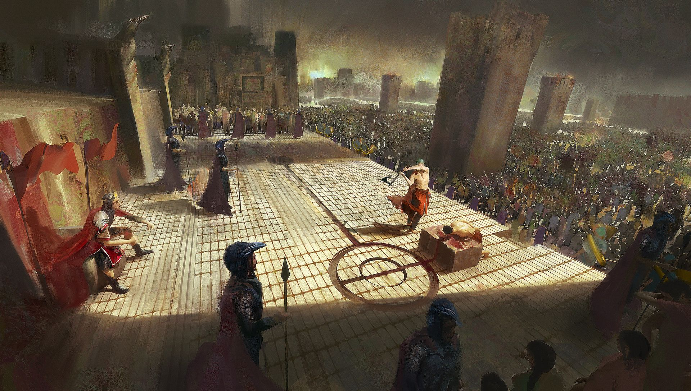

Talk them Out of It

You try to reason with the citizens and reassure them that you will try your best to advise the king against his tyranical ways.
They are skeptical at first, but you manage to convince them to stop the coup and settle down, going back to normal life.
When you return to the castle, you try to reason with the king as well. He becomes angry with you for questioning his rules and demands.
The king becomes angry with you and orders for your execution.
The END